The Beginning
I ended up getting into photography on an impulse buy, see, I had been on small trip outside of my normal
area and wanted to take pictures of the sights, however, for the life of me I couldn't get my little
phone camera to take the beautiful pictures I was hoping to capture. After that happening all day, I had
gotten frustrated by the end of the trip. Then while out picking up some basic items for home I ran across
a camera, on sale, for 50% off After the experience earlier that day, I didn't even think, I just bought,
and have never looked back since.
It didn't take very long for me to realize that I had no clue on how to REALLY use this new camera I
just spent a couple hundred dollars on, however that was simply the next challenge I thought I had to
Conquer, was I ever wrong!!
Toronto Zoo
A small collection of pictures from my trip to the Toronto Zoo.


 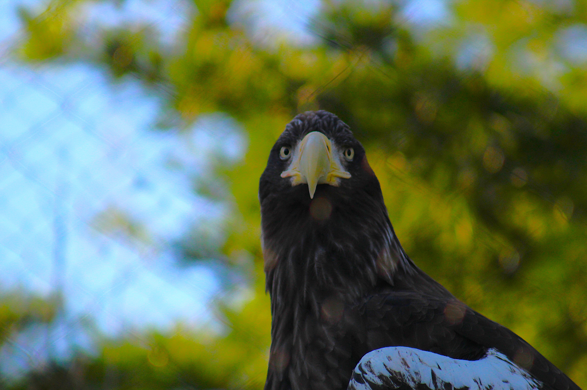
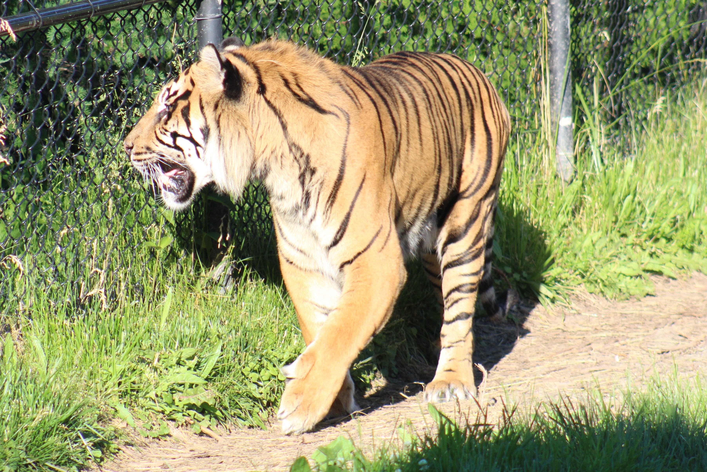
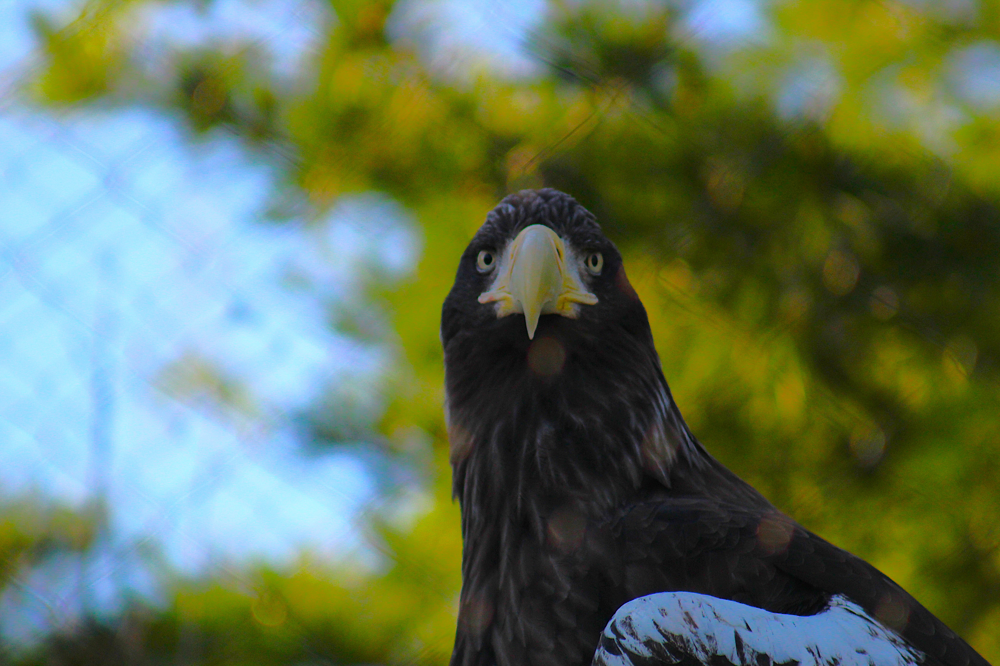
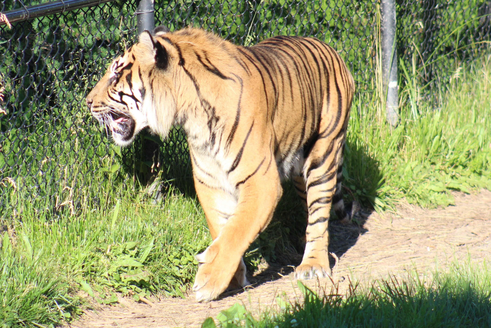
COVID and Photography
It wasn't long after I bought the camera that the lockdowns started, I only had it for a few weeks
before the world came to a halt, any thoughts I had about getting someone to teach me how to use the
camera, or any classes I considered taking for photography were suddenly gone, there would be no way
with how severe the lockdowns were that I could have another person teach me, and with my career at
the time being focused on Hospitality and events, I wasn't working, therefore couldn't consider
spending money on taking an official course. So, I decided to teach myself.
I would watch videos and read articles in the evenings, and everyday during the week, Monday to Friday,
I set my alarm for 8:30AM and went out for a minimum of 6 hours practicing Photography and the lessons
I recently learned from online sources.
The lockdowns, as horrible as a situation as the big picture was, offered me the most amazing chance to
learn photography.Not only did it give me the time, it also gave me the freedom to take pictures without
people getting in my shot or making me try to wait for the right moment when nobody was in frame, because
nobody was out.
Local Flora
A Small collection of photos of flora found around Halifax, Nova Scotia

 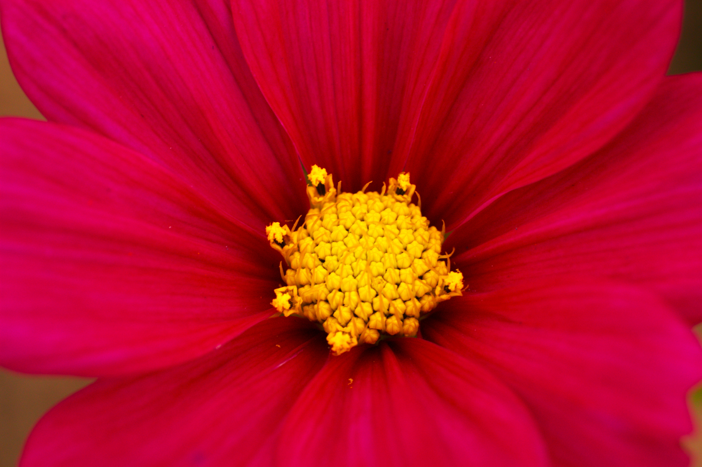
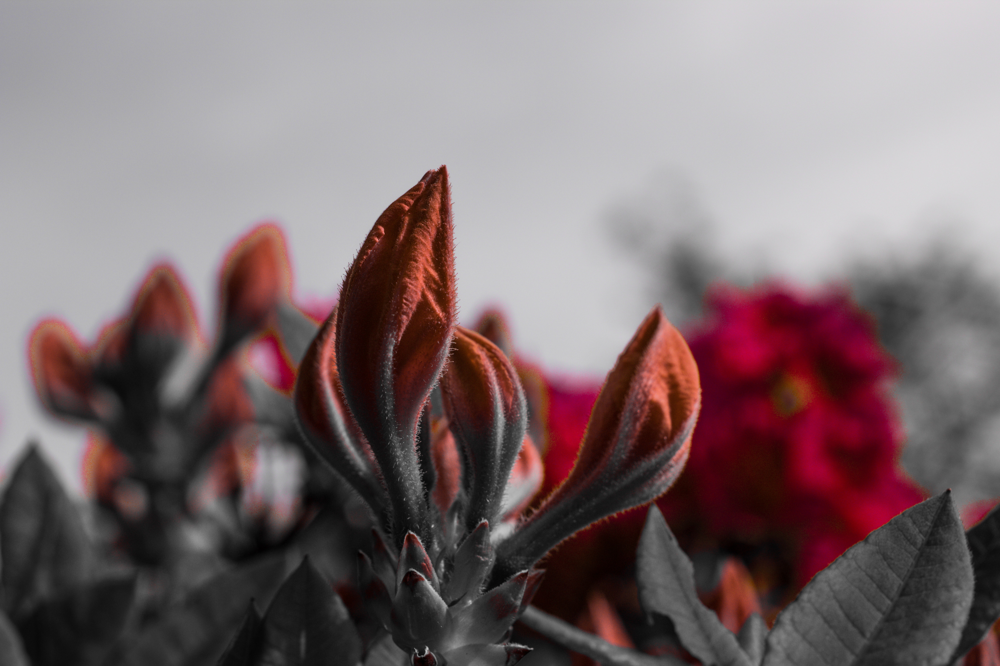
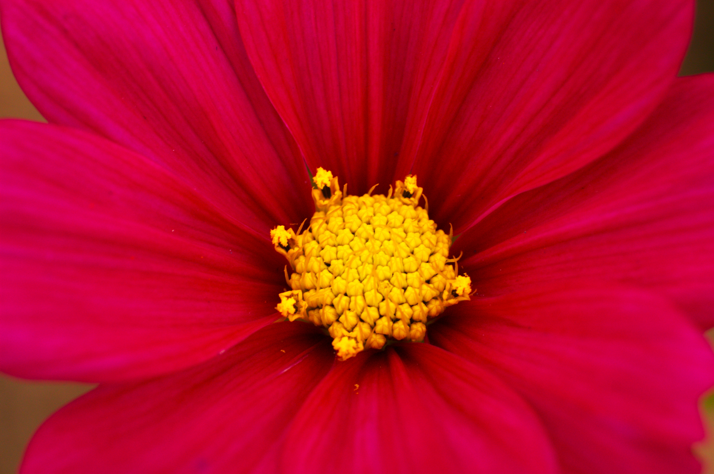
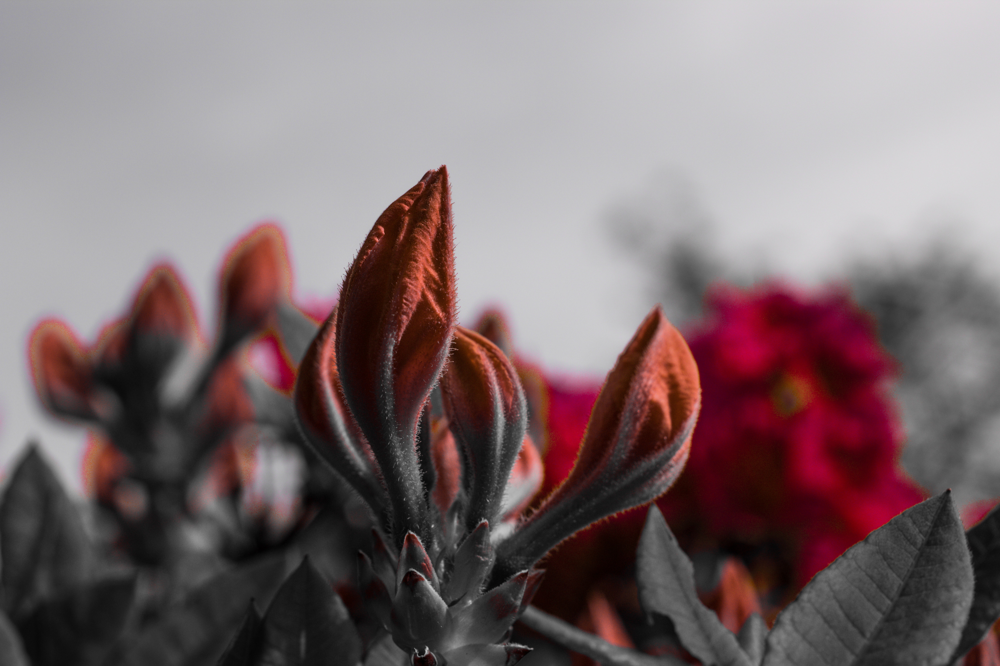


The Results
I continue to wake up in the morning and either go out taking pictures or sit on my computer and learn
about photography for the whole two years of the pandemic, due to the camera not being waterproof I
stayed home on days of bad weather, however I didn't allow either winter cold or summer heat prevent me
from going out, I maintained the routine.
The results are well worth the effort, I now never use one of the pre-set modes, my camera is only ever
on manual, and I choose each setting myself to tailor my shot to my situation to get the exact result I
want. The experience I gathered during the pandemic has been so valuable that many time when I do a test
shot to check my setting for the new setting I had picked the perfect setting the first time and don't
even need to adjust the settings further, just take the photos. This is an experience that I wouldn't
want to trade for anything. It has been tremendously valuable and showed me that I have a love for a new
hobby, Photography, one that I never thought that I would get into.
I can't wait to have the opportunity to share more of the wonderful pictures I have taken over the
years.
Local animals and scenery
A collection of memorable moments from our recent trip to the city zoo.


 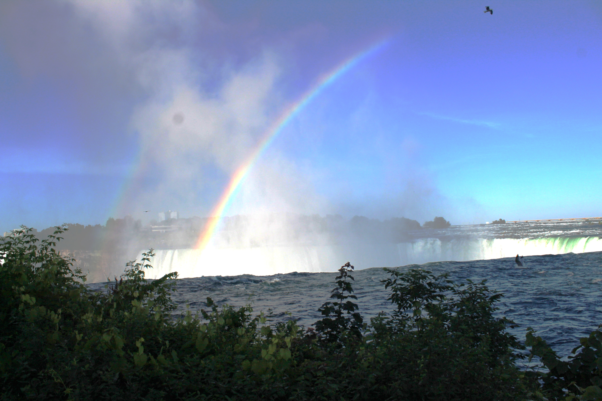
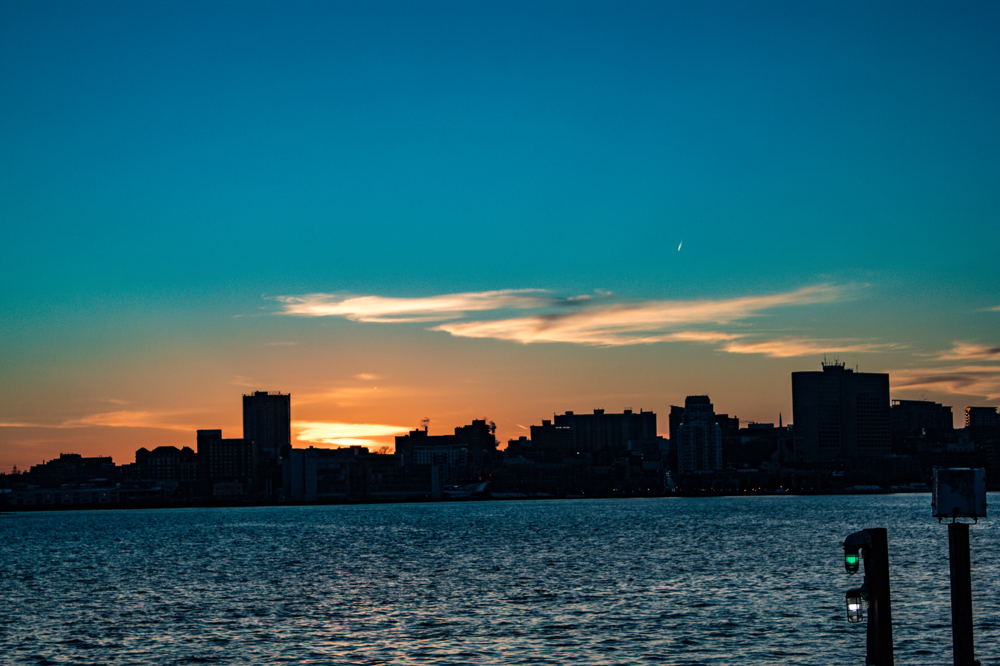
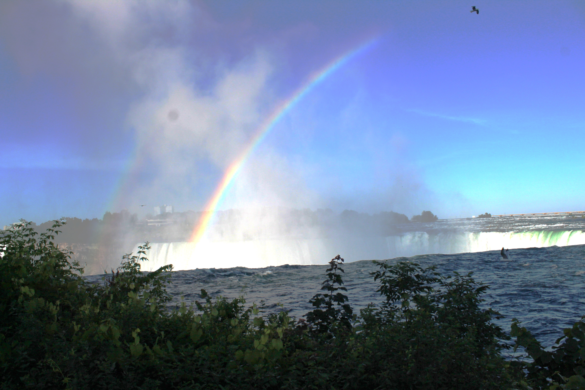
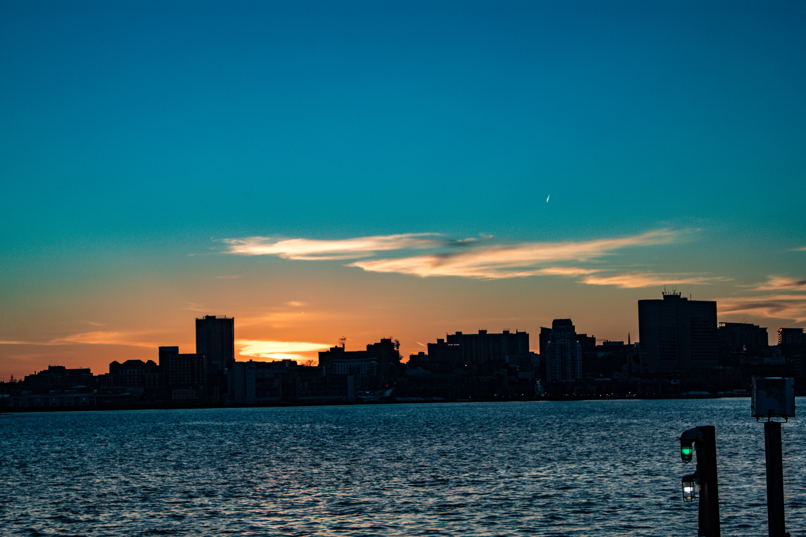